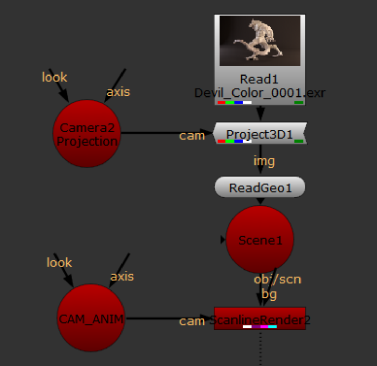
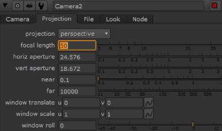
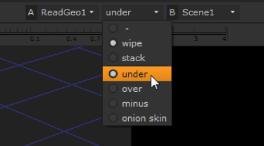

除了观看和渲染 3D 场景，相机还可以将 2D 静止图像或图像序列投影到场景中的几何图形上。这类似于实际摄影中使用的前投影系统，其中背景图像或其他元素被投影到舞台上，并与其他元素一起拍摄。
在 Nuke 因此，投影相机可以接收从原始镜头或另一个镜头跟踪的相机数据，以设置匹配移动到另一个来源的投影。
这个设置需要这些节点: 一个投影摄像机，一个场景节点，一个 Project3D 节点，一个几何对象节点 (你将投射到什么), 和一个 2D 节点，其中包含要投影的图像。
当你创建一个投影相机时，你需要收集一些信息并做一些小的计算来确保投影工作。以下是您需要的信息:
• 拍摄投影图像的镜头的焦距。
• 扫描图像的分辨率。
• 胶片扫描装置的扫描仪间距。
获得这些信息后，需要进行这些计算才能获得投影设置的水平和垂直孔径设置:
水平。Res./扫描仪间距 = 水平光圈
垂直分辨率/扫描仪间距 = 垂直光圈
因此，例如，如果您的图像分辨率为 720x486，扫描仪间距为 20，则结果如下:
720/20 = 水平光圈 = 36
486/20 = 垂直光圈 = 24.3
通常，对于大多数专业项目，您可以从镜头报告中获得镜头焦距。如果不可用，您可以通过 3D 跟踪应用程序 (如 Boujou 、 Syntheyes 或 RealViz) 运行镜头来推断镜头信息。
一旦拥有了要投影的图像的水平和垂直光圈以及镜头焦距，就可以完成投影相机设置。
| 1。 | 选择 3D> 相机 将新相机添加到脚本中，并重命名节点以将其标识为投影相机。 |
| 2. | 选择 3D> 着色器> Project3D 将 Project3D 节点添加到脚本。 |
| 3. | 将 2D 图像 (即读取节点) 连接到 Project3D 节点。 |
| 4. | 将投影相机连接到 Project3D 节点。 |
| 5. | 将 Project3D 节点连接到应该接收 3D 投影的几何节点。 |
| 6. | 双击 “投影摄影机” 节点以加载其参数。 |

| 7. | 单击 投影 在相机面板中添加标签，然后输入您收集的信息 焦距 , 卧式孔径 ,和 垂直孔径 . |

完成后，查看 3D 场景以检查投影的位置。下一节解释如何一起预览 2D 和 3D 元素以检查复合结果。
| 1。 | 选择场景节点并按 1 向查看器显示其输出。 |
| 2. | 如有必要，按 标签 将查看器切换到 3D 模式。 |
| 3. | 选择渲染摄影机对象或节点，然后按 H 通过它看。 |
| 4. | 选择包含要在查看器中查看的 2D 图像的节点，然后按 Shift + 2 . |
的 转变 2 按键将图像连接到查看器 (指定下一个可用连接，编号 2)，并设置比较擦除。
| 5. | 从查看器复合下拉菜单中选择所需的选项，如 结束 , 下 , 减去 , 和 擦拭 )。 |

最后一步叠加了观察者中的两个元素。十字准线 (如下所示) 是允许您调整擦拭位置和角度以进行比较的控件。
|
|
| 将 3D 场景与 2D 图像进行比较。 |
|
|